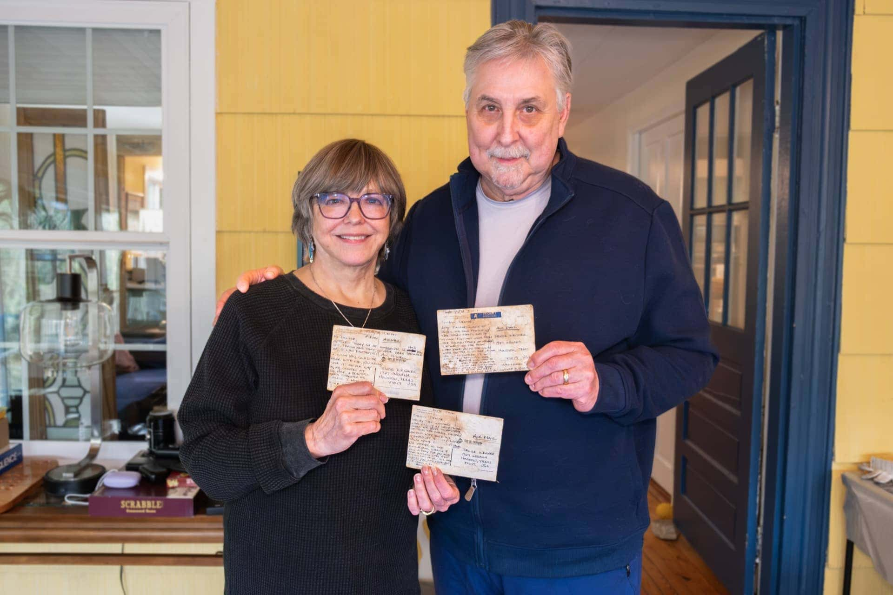
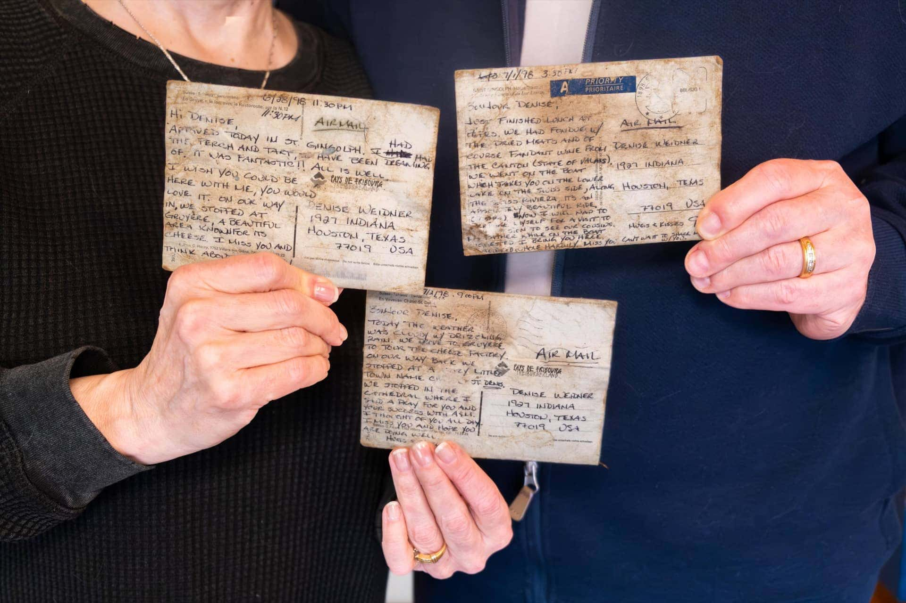
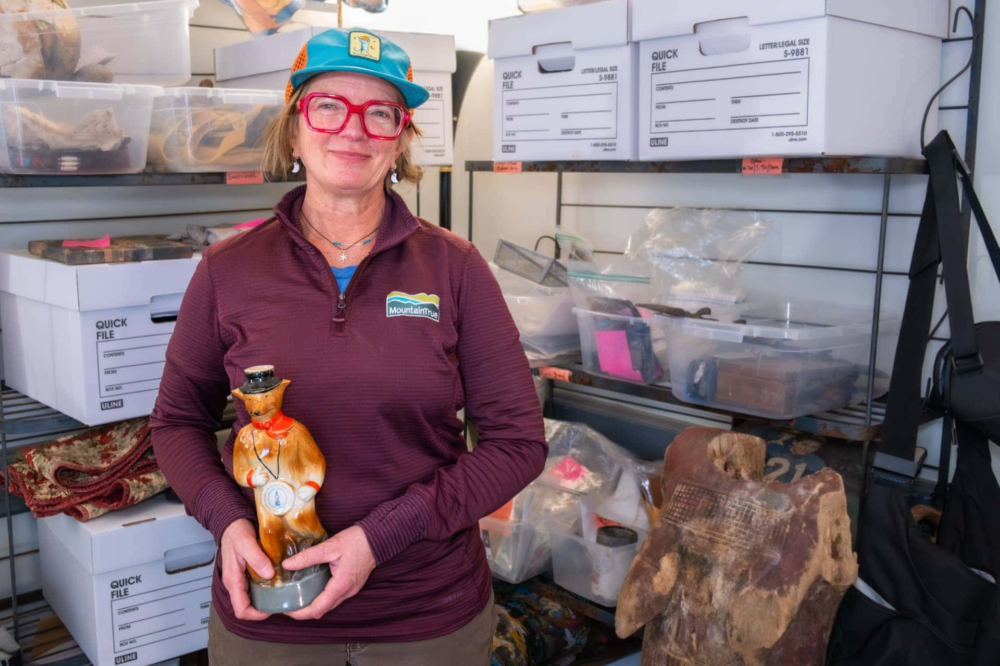
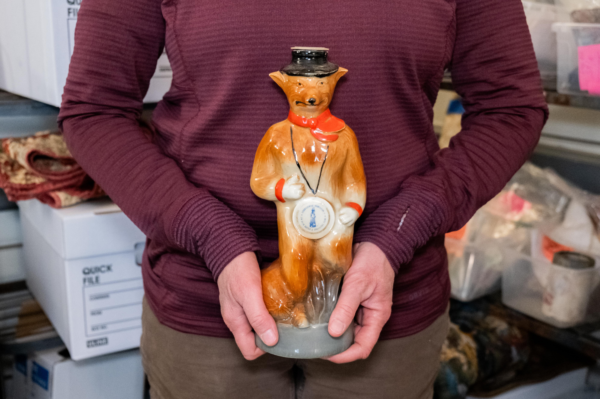
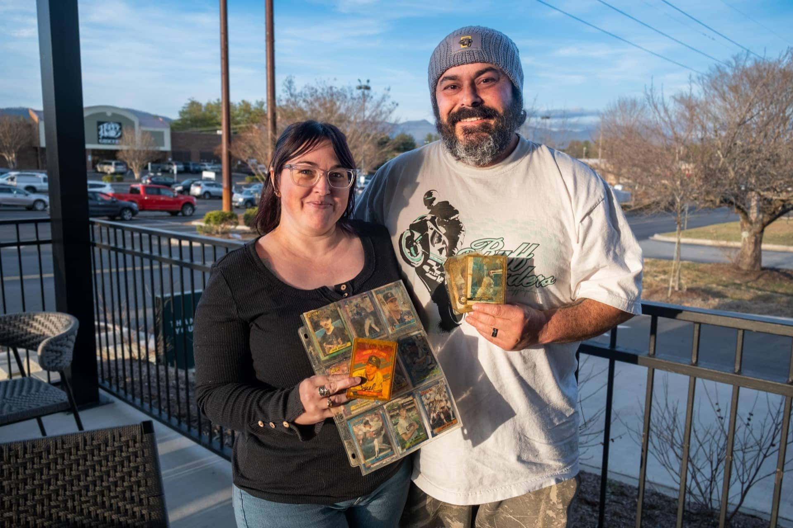
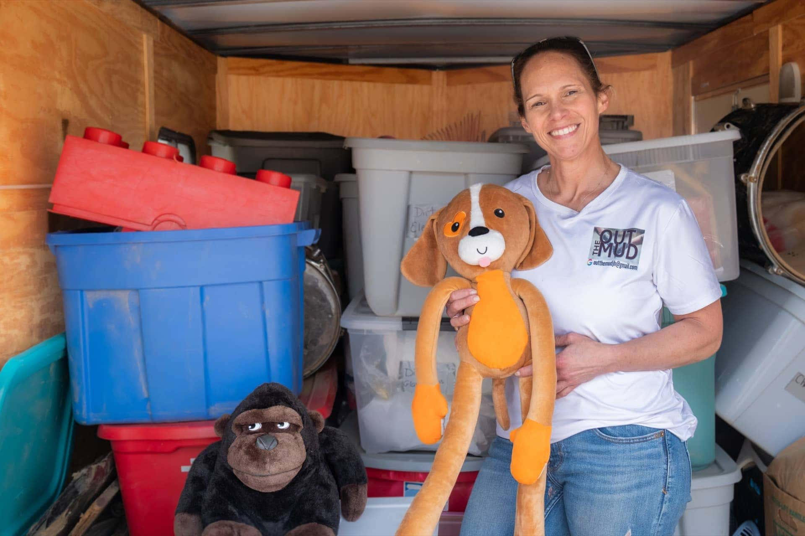
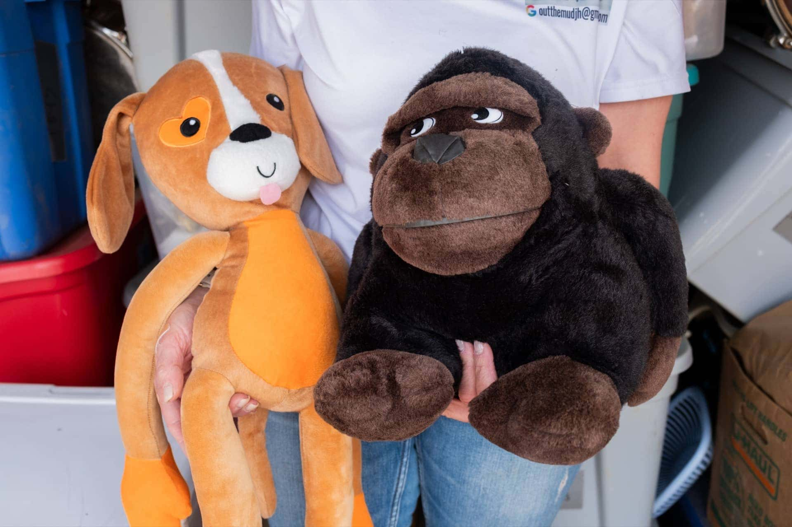
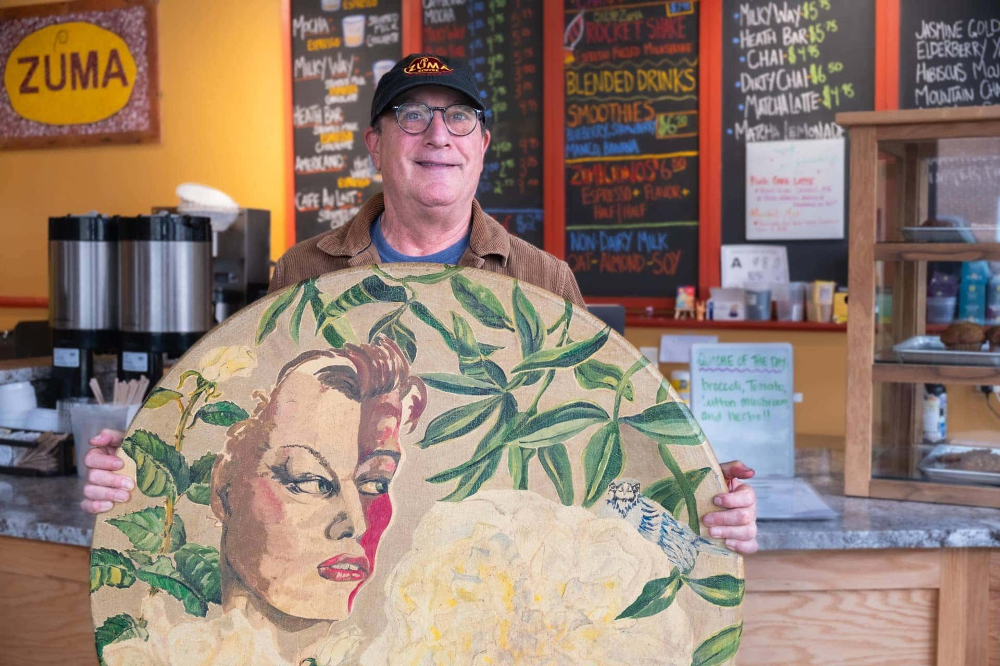
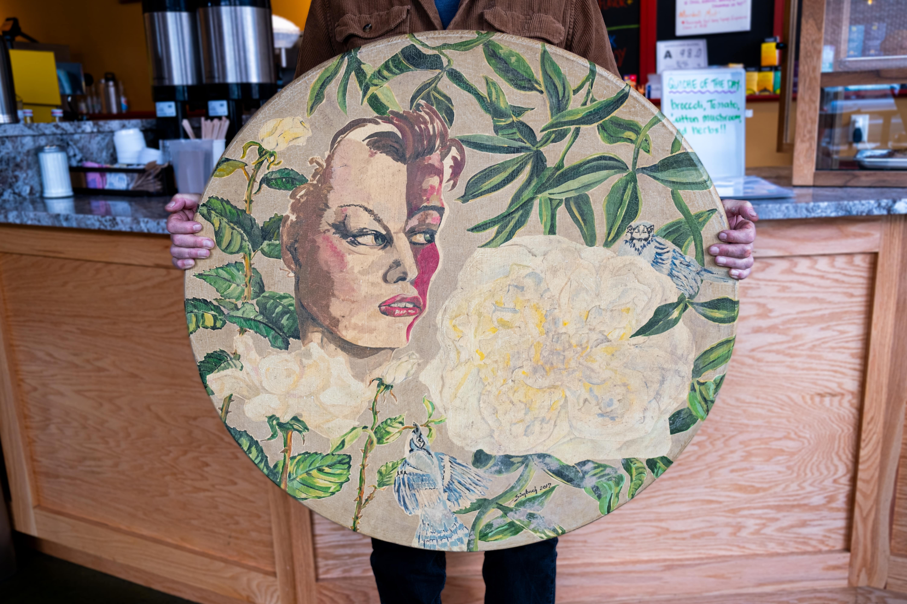

Denise and Greg Carraux — 28-Year-Old Love Letters
In December 2024, while searching for lost objects in the area in and around the football field, Holtz and her volunteers found three postcards, still intact and readable. Based on information visible on the cards, each was sent from Switzerland to Houston, Texas, within the same two weeks during the spring of 1998. Holtz cleaned the cards, took photos of them and posted her find online in the hopes of hearing from the owners.
Nine months later in September 2025, Greg Carraux, 67, received a message on his phone from an unknown number with a photo of the postcards and a note asking if they belonged to him. At the time, one of Holtz's volunteers, Jill Alexander, was going through any items with names on them and trying to find their information via Google.
He showed the images to his wife, Denise Carraux, 66, who immediately recognized what they were.
"People say 'it's only material things,' but when you look at it, it's like, you lost the light, you lost everything. So basically, at 67 I'm starting over again," said Greg Carraux, who explained the couple moved to the area only four months before the storm. The floods washed away many of the valuable items they had brought with them from Houston, Texas, valuables collected over years and generations.
The postcards were keepsakes from the very beginning of their relationship. Right after the two met in early May 1998, Greg went away on vacation for 10 days. Each day he wrote a letter to Denise about his travels. From those letters their romance blossomed. To Denise and Greg, the sentimental value and history of the postcards make them irreplaceable.
"Things are very important because they capture your history," Denise said. "I'm just so happy to have them."
Luckily, two more postcards were found and returned to the couple this March.


Mandy Wallace — A 1976 Jim Beam Decanter
In March 2025, while cleaning up debris along the French Broad River as a part of her work for MountainTrue, Mandy Wallace, 55, came across a tiny piece of ceramic glass poking out of the mud. She bent over to pull it out, expecting a fragment, and was surprised to see a fully intact ceramic Jim Beam Decanter emerge in the shape of a small orange fox.
"It was the very first found item for our organization," Wallace said. "The beginning of all of this."
Earlier that month, Wallace along with 10 other full-time workers had been hired by MountainTrue to handle debris cleanup along the rivers after the storm. Including Wallace, all of the new hires had lost their jobs due to damage from the storm. The non-profit had received a small grant from the Land of Sky Regional Council, a multi-county, local government, planning and development organization, to support the cleanup initiative.
Since onboarding what Wallace calls the "OG Debris Team," 92 workers have been added to the organization's cleanup crew thanks to another $10 million grant MountainTrue received in July 2025 from North Carolina Department of Environmental Quality.
As their team grew and more items were collected, Wallace was officially given the title of Artifact Recovery Technician in September 2025. She now has her own office in Weaverville, North Carolina, with shelves full of items including quilts, old china, photo albums and a recently found 3-foot-tall handcarved wooden statue of a female form.
The Jim Beam Decanter sits on her office windowsill slightly away from the shelves of other objects across the room. It is joined by various other items she has collected, none of which look like they could have survived tumbling through roiling floodwaters.
"My favorite items are the ones that are just so delicate," Wallace said.


Jack and Caitlin Wright — Baseball Cards
In April 2025, alongside Wallace, a team of MountainTrue volunteers were working along Sweeten Creek right off the Swannanoa River in Biltmore Village, an historic and flood-prone neighborhood on the southern edge of Asheville. Amid the debris were multiple sleeves of old baseball cards scattered along the riverbank.
In September 2025, Wallace posted the cards along with other found objects — crumpled photographs, military pins, award plaques, vases and CDs — on the group's Facebook page.
In February 2026, Jack Wright, 43, who is of no relation to Alice Wright, reached out to claim many of the baseball cards. Back in April, his wife, Caitlin Wright, 37, had claimed their daughter's baby photo album collected from roughly the same location the cards were found.
Even after the album was returned to the couple, however, Jack doubted that any of the other items they lost in the flood would have survived. When the storm hit, Jack's generational family paint business, which was located roughly a mile away from Sweeten Creek and along the river, had been completely washed away. The cards along with the baby album had been about 30 feet above the ground level in storage when the river water started to rise.
"There were probably 40 to 50 cards, big three-ring binder books up there that had multiple sleeves of cards in them," Jack said. "They're just old cardboard from, you know, back in the '80s and '90s. I never would have thought they would have survived."
But when Jack finally decided to look through the Facebook page, he was surprised to see the baseball cards that he grew up with and collected with his father.
"You never know what's going to pop up that you thought was gone forever," Jack said. "So it's kind of helped me make peace with it, getting some of them back so I can move along from the storm."


Jill Holtz — Children's Stuffed Animals
The stuffed monkeys Holtz found at the center of a football field in Swannanoa two Decembers ago were the first objects she recovered after the storm.
"That's what started it. I saw these stuffed animals, and was like, 'I'm gonna find the little kid that this belongs to,'" Holtz said.
Despite posting photos of them on Facebook, Holtz still has not been able to connect with the original owner, but she hasn't given up hope. She has, however, been able to return numerous other stuffed animals to locals around the area.
While cleaning up the field later that December, Holtz found a giant, roughly 2-foot-tall white teddy bear with a red bowtie caked with dirt. It took over a week of multiple scrubbings before it regained its original coloring.
"I think that I found it and I thought I wasn't going to hold on to it at first because it was just so, so beyond dirty," Holtz said. "I remember setting it out, and then I just was like, 'I can't leave that. I can't do it.'"
Her perseverance paid off because shortly after posting the bear to Facebook, a woman came to claim it. The bear had been a Valentine's gift from her husband years ago. "It was so worth it. It was full circle, complete closure," Holtz said. "I was so thankful that it belonged to her."
In June 2025, Holtz found another stuffed animal, a medium-sized reindeer wedged between two logs behind a nearby cornfield, where it had been stuck for nearly eight months. After she retrieved and cleaned it, she posted the image to Facebook. Not long after, a mother messaged Holtz saying it belonged to her young daughter and they set up a time to meet. "She met me with her daughter, and I was able to give it back to her," Holtz said. "It was very emotional."


Joel Friedman — A Hand-Painted Tabletop
Nearly four weeks after the storm, Ciro Pena, a local water guide and owner of Blue Heron Whitewater Rafting, was hiking alongside the river north of Asheville looking through debris for lost items when he stumbled upon something he recognized.
Five miles north of Marshall, North Carolina, a small town of only 800 residents, he pulled a 4-foot-tall hand-painted tabletop from the mud. The tabletop, he knew, belonged in one of only two nearby coffee shops, Zuma Coffee, owned by Joel Friedman, 65. The business, which has been open for 25 years, was known to have had four tabletops painted and gifted to the establishment by local artist Lois Simbach. When the storm hit, the river filled the shop with more than 9 feet of water, washing away three of the four tables.
Months later, in late April 2025, Friedman had a grand re-opening of Zuma Coffee and Pena showed up with the painted tabletop. Both Friedman and the community were overjoyed.
"At that point, we needed anything to lift us up. Any little victories were big victories," Friedman said.
Only a few months before, another one of the tabletops had been found by a different local who was hiking in Del Rio, Tennessee, 30 miles downriver from Marshall. "It felt like an old friend had come back to visit. It felt like anything's possible," Friedman said.
Today, both of the two lost tabletops remain in the shop. One is used regularly for its original purpose while the other Friedman has slightly different plans for. "We're gonna hang it on the wall, sort of a symbol of resiliency," Friedman said. "Things, even if they're in your memory, are never really lost."